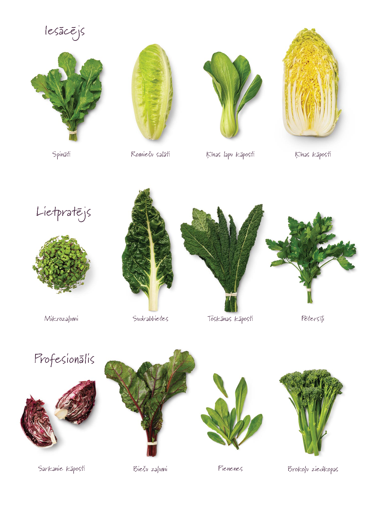

Zaļie smūtiji. Pagatavošana un receptes
Iepriekš minēju, ka zaļie smūtiji ir bagātīgs olbaltumvielu, šķiedrvielu un citu svarīgu uzturvielu avots. Taču katram no mums ir atšķirīga izpratne par to, kas ir garšīgs un veselīgs. Tāpēc šoreiz vairāk par to kā un no kā pagatavot smūtiju, kā arī piedāvāšu dažas receptes pirmajiem mēģinājumiem.
Ēdiena pagatavošanai pieeju radoši, tāpēc man parasti neviena recepte neatkārtojas. Izmantoju sezonālos zaļumus, augļus un ogas no dārza vai to, kas tajā brīdī pieejams veikalu plauktos. Taču pamatā ievēroju, lai zaļumi būtu pietiekoši un gala rezultāts iznāktu zaļš. Ar to es domāju vistiešākajā ziņā, ka smūtijs ir zaļā krāsā. Līdz ar to tas ir ne tikai bagātīgs uzturvielu, bet arī hlorofila avots, kam piemīt magnētam līdzīga īpašība izvilkt toksīnus no šūnām. Hlorofils jeb “augu asinis” ir bagāts ar skābekli un gaismas enerģiju, kas nodrošina vislabvēlīgāko vidi prātam un ķermenim, kā arī spēj nomierināt un sadziedēt iekšējos audus.
Smūtijs, kokteilis vai sula
Te nu vēlos izskaidrot savu terminoloģiju, lai saliktu pa plauktiņiem ko es saucu par smūtiju, kokteili vai sulu.
- Smūtijs. Tā ir maiga un viendabīga masa, skābā krējuma konsistencē. Visas daļiņas ir perfekti sasmalcinātas, tās nenoslāņojas un apvienojoties rada lielisku garšas buķeti. Pats galvenais rādītājs – smūtijs ir tumīgs un ēdams ar karoti. Parasti šis ir variants, kuru gatavoju visbiežāk, jo tas rada labu sāta sajūtu un līdz ar to vienmēr jūtos paēdusi. Ņemot līdzi ikdienas gaitās, leju traukā ar vāku.
- Kokteilis. Neatkarīgi no krāsas un garšas, konsistence ir krietni šķidrāka. Tas ir dzerams ar salmiņu vai no glāzes, neizmantojot karoti. Ņemot līdzi ikdienas gaitās, leju pudelē ar vai bez salmiņa.
- Sula. No augļiem, ogām, zaļumiem un dārzeņiem izspiests šķidrums. Biezumi, kas paliek pāri un nonāk atsevišķā tvertnē, netiek izmantoti. Sulas negatavoju tikai un vienīgi viena iemesla dēļ. Man ir ļoti žēl to labumu, kas tiek labākajā gadījumā izmest kompostā. Te es domāju ar uzturvielām bagātās mizas, sēklas un serdes, kuras smūtijā tiek sablendētas viendabīgā masā.
Sastāvdaļas
Savā piemājas dobē burkānus un bietes audzēju ne jau tāpēc, ka man interesētu, kas tur izaugs apakšā. Vairāk saista redzamā ar sauli pielietā virszemes daļa. Mani mīļākie zaļumi ir spināti, biešu lapas, burkānu laksti, pētersīļi, lakši, gārsa, pieneņu lapas, skābenes, raudene. Ja ir tāda iespēja, izeju no rīta dārzā un salasu tai dienai paredzētos zaļumus. Ja tāda iespēja nav, tad veidoju sarakstu un iegādājos nepieciešamās sastāvdaļas veikalā vai tirgū vairākām dienām. Zaļumus labprāt papildinu ar riekstiem, žāvētām plūmēm un aprikozēm, saldētām dzērvenēm, avenēm, smiltsērkšķiem.
Zaļā smūtija pagatavošanai būs nepieciešami:
‣‣‣ Zaļumi
- Spināti (nopērkami lielveikalos, bet vislabāk tos pirkt tirgū svaigus vai izaudzēt savā dobē). Spinātiem ir maiga garša un tie nav rūgti, lapas satur daudz omega 3 taukskābes, kalciju, magniju un A,C,E un K vitamīnus. Var lietot kombinācijā ar citu tumšo lapu salātiem vai kāpostiem.
- Tos var izvēlēties pēc saviem ieskatiem un garšas, vēlams izvēlēties salātus ar tumšām lapām – tiem ir augstāka uzturvērtība. Ļoti daudz C, K un A vitamīnu un folijskābi satur romiešu salāti. Ledus salātiem ir ļoti patīkami maiga garša, tie parasti patīk bērniem un vīriešiem.
- Kāposti. Krokainie un gludie, ķīnas vai kalē kāposti. Ar galviņkāpostiem uzmanīgi, tie ir diezgan sīvi.
- Rukolai ir izteikti asa garša, tā stiprina kaulus un uzlabo smadzeņu darbību.
- Seleriju kāti arī piedos interesantas garšas nianses. Ne visiem varētu patikt kātu šķiedras, kas kā matiņi dažreiz peld pa smūtiju.
- Kviešu zelmenis. Tie ir kviešu graudu zaļie dzinumi, kas bagātīgi satur dabiskos vitamīnus, minerālvielas, hlorofilu un enzīmus koncentrētā daudzumā. Tas lieliski attīra asinis, orgānus un gremošanas traktu no piesārņojuma.
- Viss zaļais, kas aug dārzā – skābenes, pieneņu lapas (uzlabo gremošanu, palīdz atbrīvoties no aizcietējumiem), gārsa, nātres, rāceņu lapas (novērš vēža šūnu attīstību), pētersīļi (satur daudz antioksidantu, minerālvielu, vitamīnu un šķiedrvielu, palīdz samazināt novecošanos, efektīvi regulē cukura līmeni asinīs), dilles, biešu lapas, burkānu lapas utt. Var pievienot sev zināmos ārstniecības augus.
Te būs īss ceļvedis, ko piedāvā Stollar.eu

‣‣‣ Augļi un ogas. Tos pēc sirds patikas, vēlmēm un varēšanas. Svaigi vai saldēti neapstrādāti augļi un ogas: arbūzs, melone, apelsīni, mandarīni, banāni, granātāboli, bumbieri, mango, aprikozes, persiki, plūmes, kivi, pomelo, hurma, āboli, vīnogas, mango, greipfrūti, zemenes. Visas ogas. Ja ledusskapī ir pašu saldētās ogas bez cukura, ideāli! Ananāss piešķir rūgtu garšu, bet zemenes burvīgu smaržu. Papaija garšas ziņā diži neatšķirsies no citiem augļiem.
‣‣‣ Žāvēti augļi. Saldumam un tumīgumam vienmēr noder žāvētas rozīnes, aprikozes, plūmes un pat karote medus.
‣‣‣ Rieksti un sēklas. Rada pienaināku garšu un sāta sajūtu, jo smūtijs ir treknāks. Lazdu rieksti, pekanrieksti, mandeles, kešjurieksti, valrieksti, makadamijas rieksti, pistācijas, Brazīlijas, ciedru un Indijas rieksti. Rieksti pirms blenderēšanas jāizmērcē, izraisot tajos dīgšanas procesu! Sēklas: linsēklas, sezama, kaņepju, ķirbju, saulespuķu un čia sēklas.
‣‣‣ Piedevas. Uztura bagātinātāji vai superfood ir lieliska piedeva, lai bagātinātu un dažādotu savu maltīti. Es iesaku un pati lietoju maltas linsēklas, triphala pulveri, spirulīna pulveri, čia sēklas, tulsi sēklas, indijas ceļtekas pulveris u.c.
‣‣‣ Šķidrums. Ļoti svarīga sastāvdaļa! Vēlams izvēlēties avota ūdeni, attīrītu ūdeni vai sārmainu ūdeni, kas veicina organisma attīrīšanos. Der arī pašu gatavots riekstu piens, bērzu vai kļavu sula. Aptuveni 500ml pie katra kokteiļa, lai sanāktu aptuveni 1,5 l smūtijs. Nav ieteicams izmantot krāna ūdeni!
Pagatavošana
No rīta gatavoju 1,5 l smūtija, kas sanāk vidēji 5 krūzes un pietiek visiem mājiniekiem brokastīs. Pagatavojot proporcijas ir aptuveni šādas:
- Pusi no visa aizņem zaļo lapu zaļumi. Galvenais, lai zaļumi katru dienu vai pārdienās mainās. Vari sākt ar 30% zaļumu un šo daļu palielināt līdz pat 70%;
- Divi dažādi augļi. Dažreiz kombinēju augļus un ogas;
- Viena sauja žāvēti augļi vai rieksti;
- Viena sauja dīgstu, ja ir tāda iespēja (diedzētas ķīnas pupiņas, zirnīši, kviešu zelmenis);
- Piedevas. Piemēram, 2 ēd.k. maltas linsēklas, 1 ēd.k. triphala pulveris un 1 ēd.k. spirulīna pulveris. Katru dienu kaut ko pamainu. Čia sēklas vai tulsi sēklas pievienoju katrai glāzei atsevišķi, tās sajaucoties ar šķidrumu uzbriest un rada sāta sajūtu. Ar piedevām nevajag pārcensties, labāk tās katru dienu dažādot.
- Šķidrums. Visbiežāk izmantoju avota ūdeni aptuveni 0,5 l.
Uzmanību!
Izvēloties sastāvdaļas, vērts ņemt vērā katram savas veselības kaites un nepanesību uz kādu no sastāvdaļām. Ir zaļumi, kas slimības izpausmes var tikai veicināt, piemēram, podagras gadījumā. Slimību veicina un pastiprina purīnvielām (tās rada urīnskābi) un olbaltumiem bagāts uzturs, tātad spinātiem un skābenēm NĒ, bet citus zaļumus ar paniņām ūdens vietā LŪDZU! Tie, kas baidās zaudēt kādu lieku kilogramu, izvēlaties avokado, banānus, riekstu pienu un citas sastāvdaļas, kurās vairāk kaloriju.
Receptes iedvesmai
Piedāvāju dažas receptes ieskatam, kuras var mainīt un variēt atstājot vietu improvizācijai. Galvenais, pieej šai lietai radoši un izmanto pieejamās (iegādātās) sastāvdaļas un, lai gala rezultāts iznāk zaļš. No norādītajiem produktiem sanāks aptuveni 1,5 l smūtijs.
‣‣‣ Melone un apelsīns…saldais
2 saujas spinātu
¼ melone
1 apelsīns
½ citrons
1 sauja rozīnes
1 sauja mērcētu mandeļu
2 karotes linsēklas
1 karote spirulīna pulvera
0,5 l ūdens
‣‣‣ Banāns, zemenes un avokado…treknais
1 saujas spinātu
1 sauja citu zaļumu
1 banāns
250 gr saldētas zemenes
1-2 avokado
2 karotes linsēklas
1 karote triphala pulveris vai ciedru riekstu pulveris
0,5 l ūdens vai riekstu piens
‣‣‣ Bumbieris un kivi….svaigais
2 saujas spinātu
1 selerijas kāts (var nelikt)
1 banāns
1 bumbieris
2 – 3 kivi
Gabaliņš ingvera
Kāda piparmētras vai bazilika lapiņa
2 karotes linsēklas
1 karote indijas ceļteku pulveris
0,5 l paštaisīts mandeļu piens
Zaļo smūtiju pagatavošana ir kā interesants un aizraujošs piedzīvojums, kas katram atšķirīgs! Vienam labāk ies pie sirds vienkāršas lietas un dažas sastāvdaļas, turpretī cits samiksēs kopā un radīs meistarīgu mākslas darbu kā dzeņa vēders. Taču galvenais ir, lai šis process rada prieku un pašam labi garšo.
Lai top gardi un veselīgi!
Anita ✸
Foto: simplegreensmoothies.com
what do you think?